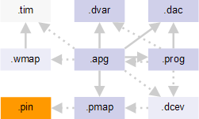

Pin configuration file
A pin configuration file specifies which pins are available on the DUT.

The pin configuration file has the .pin file name extension. It is optionally referenced from the Pin mapping file with the using pinconfig keyword. The reference is needed when a port is specified, usually for multiport operations or Automatic waveform generation.
Note The pin mapping file always implicitly references the pin configuration file
that is currently chosen in SmarTest because, in that file, DUT pin names are assigned to the
SmarTest pin names as defined in the pin configuration file.
Pin configuration files are generated within SmarTest when the pins of the device are defined (see Setting the DUT Pin Configuration for more information).
Functional changes
- Introduced before SmarTest 6.3.2